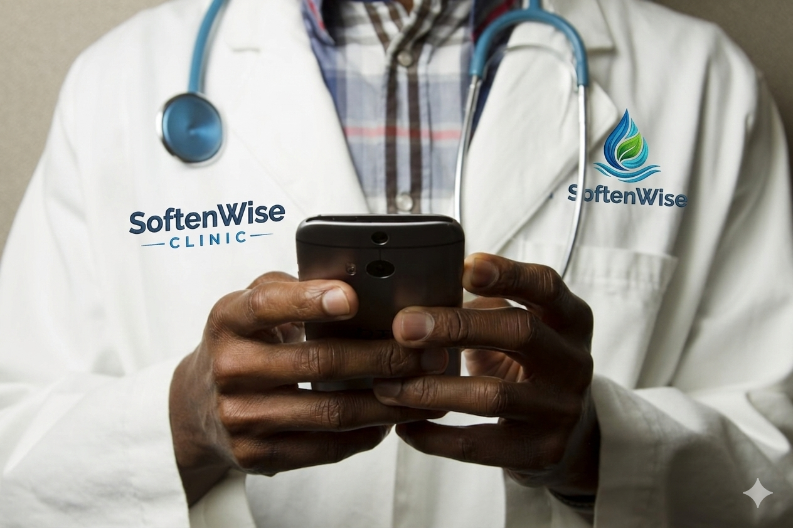

SoftenWise Clinic
Sağlık operasyonlarında dijital dönüşümün en yalın hali: randevudan hasta takibine, finanstan raporlamaya kadar klinik süreçlerinizi tek merkezden, kesintisiz yönetin.
- Küresel standartlar: 11 dil ve çok ülkeli altyapı; operasyonunuzu sınırları aşan bir çizgide taşıyın.
- Veri güvenliği: Detaylı yetkilendirme ve audit log ile her işlemin izini sürün, veriyi kontrol altında tutun.
- Ücretsiz deneme: Tüm yetenekleri 15 gün ücretsiz deneyimleyerek iş akışınıza ne kattığını görün.